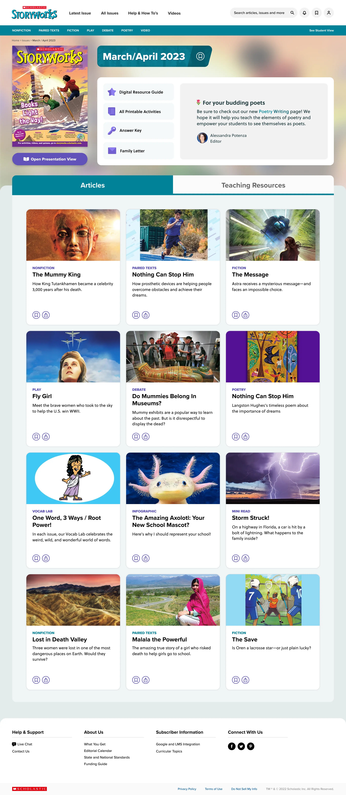
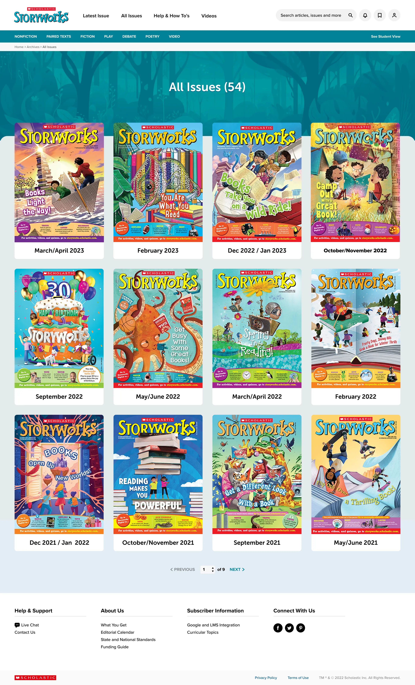
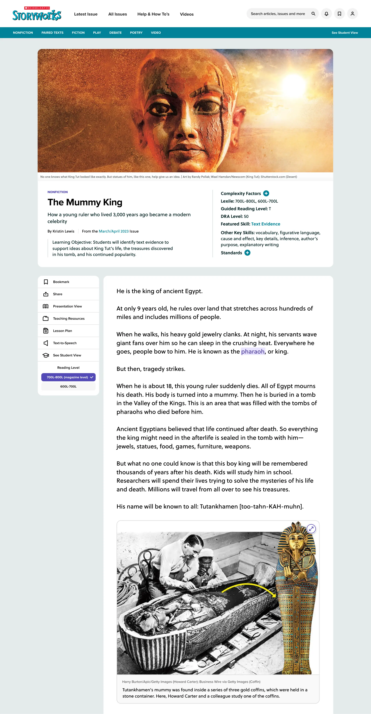
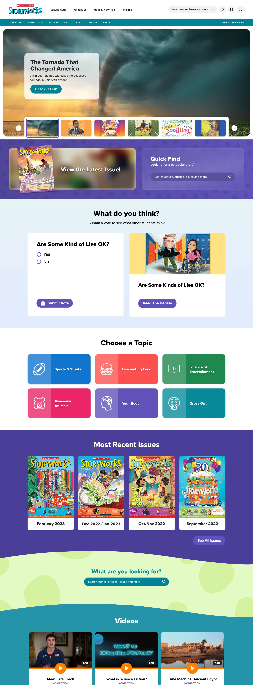

Scholastic
Scholastic is one of the longest standing and most reputable education companies in the United States. From digital learning applications, to book fairs, to monthly magazines for classrooms, they have so many endeavors that impact and support K-12 education.
One of my major projects at Scholastic was to refresh the entire visual user experience of Magazines+, a collection of over 20 different companion sites for magazines made for Grades K-12. This included creating a design system from the ground up, suitable for over 20 thematic variations. Magazines+ is used by over 250k teachers, over 13 million students, and has a roughly 50% presence in all U.S. elementary and middle schools.
This vast project included creating Foundations (Spacing, Color, Typography, etc), as well as detailed Component pages with Overviews, Guidelines and Property Specs. All Foundation and Component properties were built out in Figma to be export-ready with the newly released Variables feature. Detailed prototypes with interaction design were also created for every magazine category.



